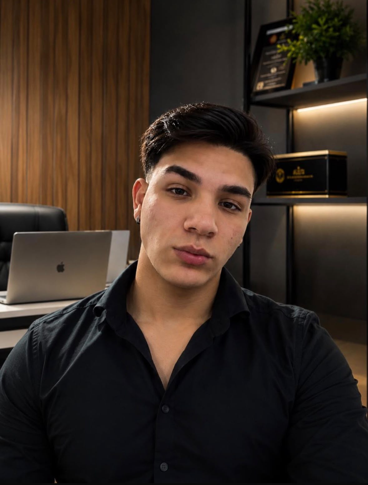

Projetamos presenças digitais que carregam em menos de 1,2s, ocupam o topo do Google e transformam cada visita em uma chamada de WhatsApp — com engenharia de ponta, sistemas CRM e automações de IA.
Carregamento em qualquer conexão — cada segundo perdido é cliente que desiste antes de ligar.
Design pensado para o polegar: a maioria dos seus clientes chega pelo celular, não pelo desktop.
Cada seção é construída para gerar uma ação direta no WhatsApp, não um formulário esquecido.
A maioria dos sites de empresas locais é construída sobre plataformas genéricas, pesadas e lentas. Nós construímos como estúdios de tecnologia constroem produtos: código limpo, infraestrutura de ponta e zero fricção para você.
Não entregamos peças soltas. Cada solução foi desenhada para reforçar a seguinte, criando um ecossistema que atrai, atende e gerencia.
Design exclusivo para o seu negócio, responsivo em qualquer tela e construído com um único objetivo: levar o visitante até o botão de WhatsApp.
Estruturamos seu perfil e seus dados locais para que sua empresa apareça no topo do mapa e das buscas de quem já está pronto para comprar.
Respostas automáticas por IA e painéis CRM sob medida que acolhem e qualificam o lead nos primeiros segundos, sem deixar nenhum cliente esperando.
"Todo projeto que sai da Artan Studio passa pela minha mesa antes de ir ao ar. Não terceirizo a arquitetura, e não entrego nada que eu mesmo não usaria no meu próprio negócio."

Fundador & Diretor de Tecnologia
Arthur Andrade lidera pessoalmente a estratégia e a engenharia por trás de cada projeto da Artan Studio. Formado na prática de construir produtos digitais rápidos e sob medida, ele estruturou o estúdio para operar como uma equipe de tecnologia enxuta — sem camadas de atendimento entre você e quem decide.
Estamos selecionando um número limitado de empresas da região para o projeto piloto de expansão do estúdio. Receba atendimento prioritário e infraestrutura completa.
Quero concorrer a uma vagaVagas limitadas por região Atendimento e aplicação por ordem de chegada no WhatsApp.
Projetos piloto da Artan Studio são entregues em tempo recorde (48h a 7 dias úteis) após o envio das informações básicas da empresa.
Sim! Configuramos tudo em infraestrutura em nuvem de altíssima velocidade para você não se preocupar com servidores.
Você fala diretamente com o fundador pelo WhatsApp para qualquer ajuste ou melhoria técnica sem burocracias.
O Diagnóstico Digital é uma análise direta do seu negócio no Google e redes sociais com o plano prático do que a Artan Studio vai construir para você.
Solicitar Diagnóstico pelo WhatsApp